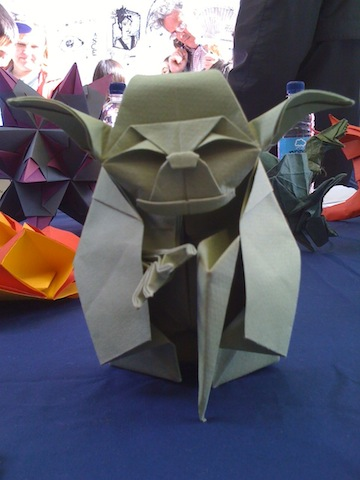
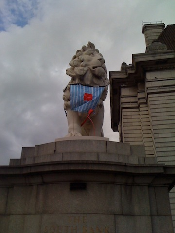

Takes out the colors
Makes colors brown

Turns the color wheel
Inverts the colors
Adds brightness

Makes darks darker and brights brighter
Blurs the element
Makes colors brighter
Adds a drop shadow
Makes the element transparent